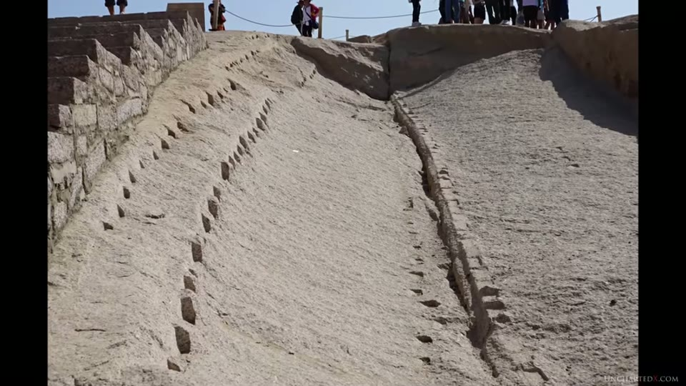
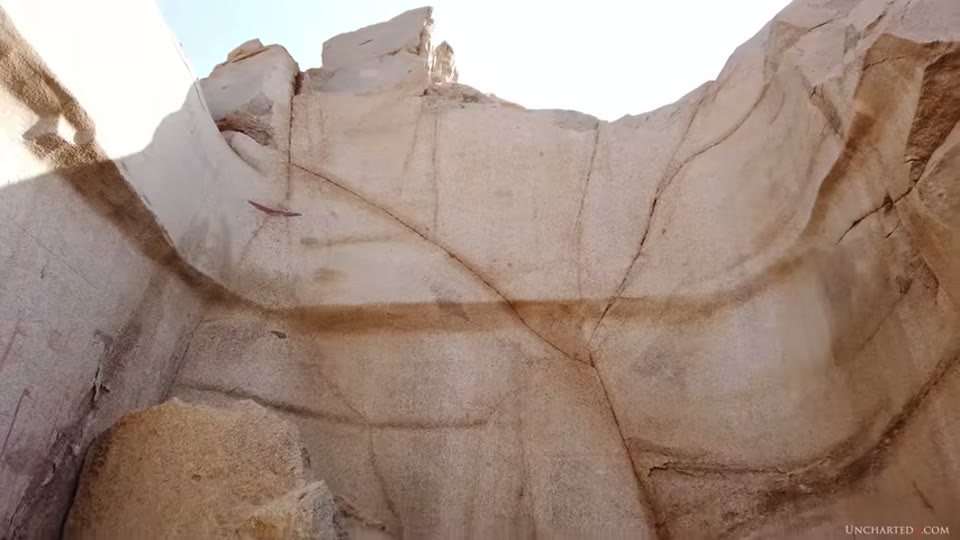
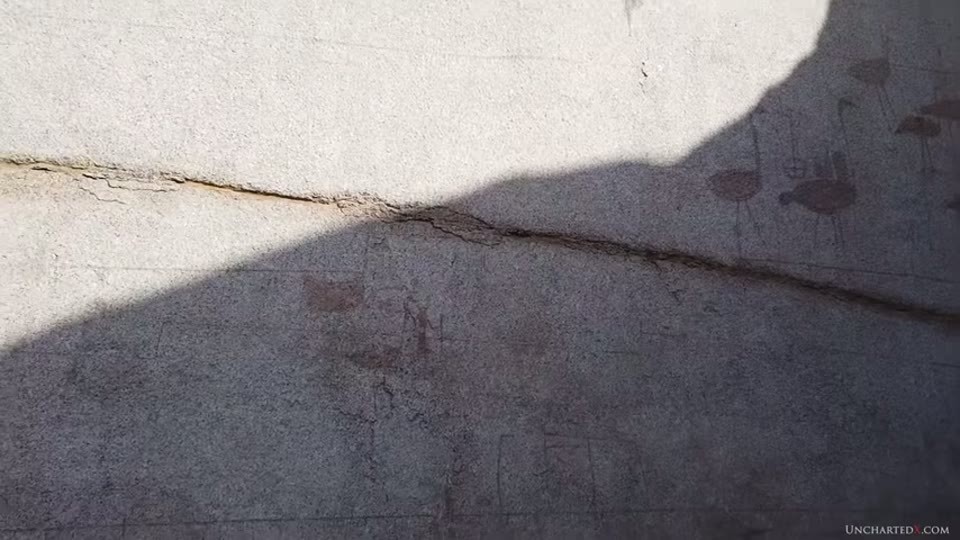

UnchartedX
The Aswan Quarry - Was a HUGE Megalith Extracted in Pre-Dynastic Times?
Ben van Kerkwyk · 42 min · watch on YouTube · summarised 2026-10-03
Filmed in an area of the Aswan granite quarry normally closed to visitors, which his group entered and were eventually asked to leave 09:53–10:25. Two claims come out of it: that a single block larger than the Unfinished Obelisk was taken out of this trench and successfully moved, and that the paintings on the trench walls are in a style that predates dynastic Egypt — which would put the quarrying earlier still.
The entry's own siblings are the Unfinished Obelisk entry, which covers the scoop marks he refers back to repeatedly, and the quarrying and logistics entry, which carries the transport arithmetic.
Three quarrying methods, and what the site shows visitors
The framing is a complaint about presentation 01:42–02:44. The quarry is, he says, the only tourist site in Egypt where it is compulsory to sit through a 20-minute video before entering — one that explains everything on site as the work of dolerite pounding stones, time and human effort, and that deals only with the Unfinished Obelisk and the scoop marks. He calls it an "indoctrination video" throughout.
Against that he sets three techniques visible at the quarry:
| method | signature | what he says it was used for |
|---|---|---|
| Wedge and chisel | a dashed line of indentations | smaller blocks, over thousands of years and into recent times |
| Traditional chiselling | tool marks from long chisels | later dynastic periods, probably iron |
| Scooping | the scoop marks | the obelisk and the largest extractions, and nothing small |
The wedge-and-chisel description is the clearest mainstream exposition in the video: indentations chiselled in a line, wooden wedges hammered in and watered so they expand, then flint — or in later periods iron — wedges driven down to split the stone along the line. His examples of its use are all dynastic or later: Ramesses II's workmen taking slabs off the granite casing of the Middle Pyramid at Giza, Middle Kingdom work around 2000 BC, and Greco-Roman millstone cutting. The on-site guide's point, in conversation, is that the quarrymen wanted the flat surfaces an earlier extraction had already made.
His observation about the distribution is the part that carries weight for the two-industries claim: the wedge-and-chisel signatures are nowhere associated with extracting very large pieces — they appear where large pieces were later being cut up into smaller ones.
Nubs, and what cannot make them
Credited to a geologist travelling with the group, and new to him 04:46–07:19. If your method is wedge and chisel, aimed at splitting, you do not end up with a nub: the stone either splits along a mostly straight line or the attempt fails and a chunk comes away. He shows a failure of that kind on the megalithic granite of the Osireion, where an attempt to split a slab left only a corner.
So nubs are either deliberate features or the product of a different method — and he notes they keep company with scoop marks, appearing in the same areas and sometimes on the same stones, as on the granite casing of the Third Pyramid at Giza. The same question across several continents, with the moulding reading set against the quarrying reading, is the megalithic knobs entry.

The one quarrying method whose mechanism nobody disputes.

What a failed split leaves behind, which is not a nub.

The feature the geologist's observation is about, on another continent.
The trench in the harbour area
The physical core 10:25–13:01. Walking in, he describes a large trench whose walls were worked by scooping, with the outline of the removed piece given by the indented tops of the scoops and ridges along the tops of the walls that he reads as the remnants of narrow trenches cut down and then extended underneath the block.
His comparison is explicitly by eye. The Unfinished Obelisk's width can be established from the distance between its flanking trenches at its widest point — 4.2 m at the base — and since the trenches are only about two-thirds as deep as they would need to be, and obelisks have square sections, he takes its intended maximum height at the base as about 4.2 m too. Set against that, "the height of the block that was removed here seems to have a larger cross section than that of the obelisk, even accounting for trenches and undercutting. To my eye this was a bigger piece" — and, unlike the obelisk, it came out.
Only most of one wall of the original trench survives, plus a small part of the opposite wall at the base; the rest has been quarried away since. At ground level, where the block would have been undercut, he points out notches and channels cut at regular intervals, and asks what they were for — suggesting they may belong to the mechanism used to lift the piece out.
Lifting is where he presses the standard account 13:01–14:03: how a Bronze Age culture would raise a 1,200-ton piece off an angled bed, five metres or more into the air, and move it across broken ground. One proposal he reports from his own correspondence is that the dolerite balls found in large numbers on the site — the great majority of them broken in half — served as bearings under the blocks, which he offers as a better account of how a dolerite sphere gets split than pounding does. The supporting fact is from the site's own excavator: Reginald Engelbach, the British engineer who dug there in 1922, found breaking one by pounding essentially impossible, and managed it only by repeatedly hurling it onto stone from a height.


The excavation the size claim is read from.

The floor features at the point of undercutting, offered as a question.

The object everything in the trench is measured against.
What the block was for
Yousef Awyan, on camera, reads a tapering in the wall markings as a sign the block was meant to be an obelisk, the same tapering visible on the Unfinished Obelisk 14:34–15:36. Ben leans toward a statue, and his supporting examples are elsewhere: the reassembled single-piece quartzite colossus at Karnak, put back together from shoulder to hand with a straight arm and so almost certainly standing; and the colossal pink granite statue Petrie recorded at Tanis, a thousand miles north, cut from Aswan stone. Both are in the colossal statues entry and the Tanis entry.
Either way, his reading is that the piece weighed "considerably more than the unfinished obelisk's 1200 tons".
He then turns the harbour explanation into a question 17:42–18:45. If this space was a harbour where boats docked for cargo, the block must have come out before it could be used as one — so where was it taken and how was it loaded? And if the excavation was already there, left by someone else, a harbour becomes a convenient reuse of it.
The paintings
The argument the video is built around 18:45–22:49. On the walls of the trench, faded, are primitive painted figures he identifies as ostriches, and further along, very faint and in blue, what he reads as dolphins — a species he says inhabited the Nile in the past. He says "they're tough to see, I've done what I can to contrast them out in these images, but they are there."
The two claims do not stand equally in the footage. The ostriches are unmistakable — seven or eight long-necked, long-legged birds in dark reddish-brown pigment, clearly drawn. The dolphins are not resolvable in any frame of this video. What runs under that sentence is plain grey granite carrying vertical iron staining along the joints; nothing blue appears anywhere in it, the one pigment mark near the point indicated is a short reddish-purple stroke, and no contrast-enhanced version is shown on screen despite the narration describing one.
The compulsory video's explanation is that the quarry workers made them. His objection is about method rather than about the pictures:
- Dynastic inscriptions are also present in the quarry, carved in the typical dynastic style and very different from the paintings.
- Dating by artistic style is a long-established archaeological method, used on pottery typologies from China to South America to Egypt, and on Egyptian hieroglyphs themselves — the sign for water changed form over time, so the characters date the writing to the Old, Middle or New Kingdom.
- That method is not applied to these paintings, and he argues the reason is where it would lead: the style is the one found on pre-dynastic material. He sets the wall paintings beside a painted object he calls an ostrich egg from an established pre-dynastic burial and says they are almost identical, and mentions in passing the egg "at least seven thousand years old" that is claimed to depict pyramids beside the Nile.
The comparison object on screen is not an egg. It is held in frame beside the wall paintings for the whole of the comparison, and it is a round-bodied vessel with a mouth and a thickened rim, standing on a clear acrylic museum mount, painted with red ostriches on a buff ground — and it carries inked accession marks, "E 39" and "263", which make it identifiable. The narration calls it "this egg" throughout. The motif really is the same; the object is painted pottery.
The inference: "the scooping and quarrying work had to have been done before the pre-dynastic paintings were ever made. How long before, we have no way of telling."
He then states the chain he thinks the standard account depends on, in his own words: "the paintings had to be done by the workers despite the evidence to the contrary, because the quarrying had to be done by the dynastic Egyptians, who therefore had to have created the scoop marks with nothing more than pounding stones, because we know that's all they had."
Curious Being takes the same marks and looks for a mechanism instead of a timeline, reaching two different answers in the scoop marks entry, which proposes flame-jet channelling, and the Aswan scoop marks entry, which rules out water jets and a natron method and offers a modern plasma boring machine as the closest match.


The paintings the dating argument rests on.

The object the style comparison is made against.
Two industries, and what he grants
The concession is worth recording because it is load-bearing 23:50–24:52. He does not claim the dynastic Egyptians had advanced technology. "They were a Bronze Age culture, they used copper and flint, they used wedge and chisel" — and that is exactly why, on his reading, the scoop marks and the thousand-ton extractions are not theirs.
The stratigraphy he offers for the split 25:22–27:00: the Unfinished Obelisk lay under up to seven metres of debris until the 1920s; the harbour area does not appear at all in surveys made before excavation, being entirely buried in chip heaps and quarry rubble; the wedge-and-chisel marks are in the higher areas and on the faces of earlier extractions. And a working point about the granite: surface stone would do for smaller pieces, but you must dig ten or eleven metres or more into the outcrop to reach rock solid enough for obelisks, columns, colossal statues or boxes of the kind in the Serapeum — which is what he says the scoop-cut test holes around the site were for. The Serapeum boxes are the Serapeum entry.
The speculation, labelled as such
He flags it twice, before and after: "so it's probably time for some speculation — what do I think was going on?… As I said, it's pure speculation, but if I follow the evidence to where it leads, this possibility seems to fit" 27:00–31:49. The sketch is an advanced civilisation cutting the top off a granite mountain, sinking test holes, extracting enormous blocks, and being interrupted "suddenly and violently"; then the Younger Dryas, then Neolithic people finding the abandoned sites and painting on them, then the dynastic civilisation around 3000 BC quarrying the upper layers with bronze-age methods while the older work lay buried under later rubble.
The supporting pattern is a list of unfinished megalithic work: the Osireion's unsmoothed walls at Abydos, the Coricancha blocks at Cusco, the casing stones of the Third Pyramid at Giza, machined boxes and lids abandoned in the Serapeum passages, and the quarry blocks left at Baalbek. The Osireion itself is the Osireion entry.
The harbour, and the Thunderstone
The last section is the transport argument 31:49–37:30, and it is arithmetic rather than inference.
He accepts the harbour reading in principle — an area flooded during the Nile's three-month inundation, boats docked for stone. What he disputes is the scale. The usual illustration is the relief in the Unas causeway at Saqqara showing a column carried on a boat; he points out that the column in it is short and not very wide, with human figures beside it for scale, and puts it at "maybe ten tons, let's say fifteen". The relief is captioned on screen "UNAS CAUSEWAY, SAQQARA" and the editor has drawn a red ellipse around the cargo on the boat — orders of magnitude from the obelisk or the colossal statues, and so not an answer to them.
The comparison he does accept is the Russian Thunderstone, moved from Finland to Saint Petersburg in the late 1700s and now the pedestal of the statue of Peter the Great. Its land transport is covered in the quarrying and logistics entry; what is new here is the sea passage. The stone was carved down continuously as it travelled, so by the Finnish coast it was within about 100 tons of the obelisk's mass; it then waited a full year while a barge was built for it, and was floated with two full-size warships lashed to each side for balance and displacement.
The figure he ends on: 1,200 tons of stone needs 1,200 cubic metres of displacement before the vessel's own mass is counted, and a ship short of that "would simply sink or just capsize". He says there is no evidence the dynastic Egyptians built barges or ships of that size, and closes with a sentence that is a concession as much as a claim: "I don't think the dynastic Egyptians were fools. They wouldn't have undertaken such a project without considering the logistical aspects of it. I just don't think they were capable of it."

What floating a stone of this order took in the 1700s.

The standard illustration of stone moved by boat, and its scale.
A postscript of about four minutes covers appearances, tours for 2023 and 2024, and producer credits.
What you can check yourself
- The three quarrying signatures are all visible at Aswan and are distinguishable by eye: the dashed line of wedge and chisel, chisel tool marks, and the scoops.
- The Unfinished Obelisk's 4.2 m width is measurable between the flanking trenches at its base, and the trenches' depth relative to a square section can be judged on site.
- The dolerite balls are on the site in numbers and the proportion broken in half is a counting exercise.
- Engelbach's 1922 account of trying and failing to break one by pounding is published.
- Dynastic inscriptions and the painted figures are on the same quarry walls, and whether they are in the same style is a matter of looking.
- Pre-dynastic painted pottery and ostrich eggs are in museum collections with published typologies, so the style comparison can be made independently.
- The Unas causeway relief is published and the column's size relative to the figures beside it can be read off it.
- The Thunderstone stands in Saint Petersburg, and its move is documented in period accounts and engravings.
What the video does not settle
- The central size claim is made by eye and nothing else. "To my eye this was a bigger piece" is the whole of it. No tape, no scale object, no survey and no photogrammetry is applied to the trench, and the obelisk's 4.2 m — the only number in the comparison — belongs to the other object.
- The block itself does not exist to be examined. What is argued from is the shape of a hole, most of one wall of which has since been quarried away.
- The paintings are not dated, only compared. The style argument rests on resemblance to pre-dynastic material shown side by side; no pigment analysis, no superposition relative to the scoop marks or the dynastic inscriptions, and no stratigraphic relationship is offered.
- The comparison object is called an egg and is a pot. It is a painted vessel with a mouth and rim on a museum mount, carrying inked accession numbers. The motif matches; the object does not match the description given of it, and no catalogue entry, site or date is given for it on screen.
- The dolphins are asserted and not shown. The frames under that sentence carry natural iron staining on grey granite and nothing blue; the contrast-enhanced images the narration says exist do not appear in the video. The ostriches, by contrast, are plainly there.
- Even granting the style, the conclusion is about a minimum. Paintings older than the dynastic period would put the quarrying earlier than the paintings; how much earlier is explicitly unknown — "it could have been thousands of years, we just don't know."
- The notches and channels are offered as a question, not an answer. No mechanism is proposed that they fit, and no comparable feature is shown from anywhere else.
- The dolerite-balls-as-bearings idea reaches him from comments and emails and is not tested, modelled or attributed to anyone by name.
- The lifting problem is raised against the standard account without a rival mechanism. What the proposed advanced technology was is not specified anywhere in the video.
- The speculation is labelled by the presenter and should stay labelled. The civilisation, the interruption, the cataclysm and the sequence are offered as a story that fits, by his own description, not as findings.
- The Thunderstone comparison establishes a requirement, not an impossibility. It shows what an 18th-century European state needed to float a stone of that order; the absence of Egyptian evidence for equivalent vessels is stated as an absence.
- The characterisation of the site's own video is not neutral — "indoctrination video", a theory "with more holes in it than a colander", an "authoritarian tone" — and no Egyptological source is quoted directly anywhere in the video, so the position being argued against is given only in his summary of it.
- Several names and terms come through mangled auto-captions. Engelbach, Osireion, Coricancha, Hatshepsut, Unas and Yousef Awyan are reconstructed; the quarry is called "the S1 quarry", which the captions also render as "as one" for Aswan, so whether the designation is a formal one or a transcription artefact needs checking.